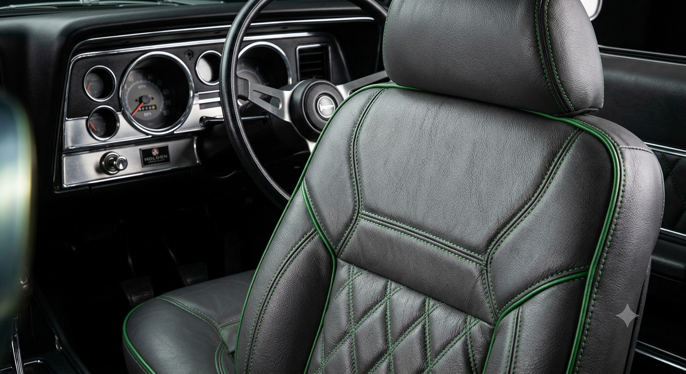
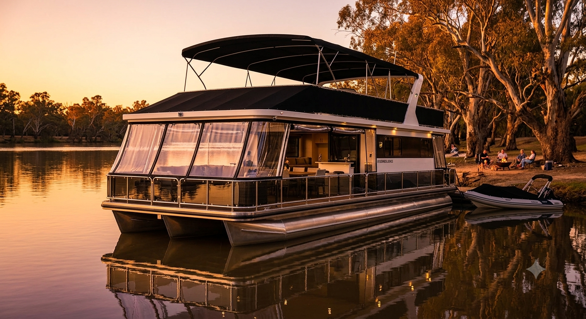
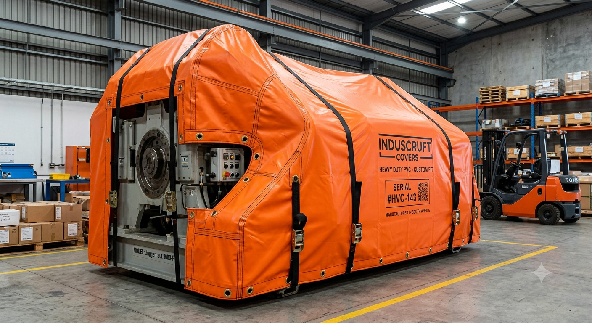
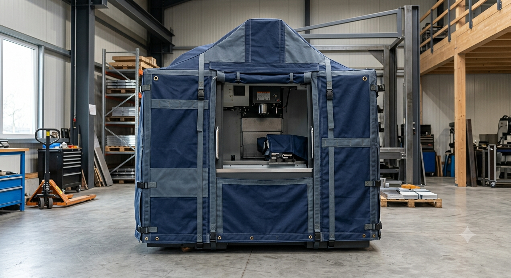

“Back in 2018 Terry retrimmed the seats in our 1974 HQ Holden, then later sorted the interior on a 2012 Hilux farm ute. Both jobs still hold up — foam’s firm, stitching’s tidy, and we’re happy to throw them into daily use without babying them.”

Pfeiffer Hill Upholstery – We cover everything.
Seats, tarps and skins built for hard work.
Trusted by locals for over 40 years · Mannum and Murraylands auto, marine and farm work · Premium canvas and PVC fabrics, built to last.
Our Service Pillars
Specialised protection and restoration for every application.

Auto Upholstery
We restore interiors, repair seats, and craft custom race seating for all vehicle types. Work includes classic cars, European models, hot-rods and work utes where trim, comfort and wear matter. Full re-trims and tailored tonneau solutions complete the offering for vehicles that need a clean, consistent finish.
“Back in 2018 Terry retrimmed the seats in our 1974 HQ Holden, then later sorted the interior on a 2012 Hilux farm ute. Both jobs still hold up — foam’s firm, stitching’s tidy, and we’re happy to throw them into daily use without babying them.”

Marine & Houseboats
Our river and coastal work includes biminis, blinds, and covers built for the water. We upholster ski boats, design boat and houseboat covers, and install biminis and blinds that make river life more comfortable in harsh sun and wind. Each cover is built around the way the vessel is used.
“We replaced the cooked covers on our ski boat in 2021 and had Terry do new houseboat blinds last summer. The ski boat runs a late-90s Malibu; the houseboat sits on the Murray near Mannum. The new gear means cooler days, less glare and no wrestling with flapping canvas when the afternoon wind comes through.”

Tarps & Agriculture
Tough header tarps and agricultural covers designed for farm and paddock work. We make solutions that sit correctly on headers, trailers and augers, helping to protect grain, hay and machinery through busy seasons and storage periods. Canvas and mesh options can be tailored for specific loads and equipment.
“Swapped to PHU header tarps before the 2020 harvest on our New Holland 9060 and added trailer covers the following season. Grain stays covered, the tarps sit properly on the machines, and we’re not patching rips halfway through a run anymore.”

Custom & Industrial
Heavy-duty coverings for sheds, trailers, machinery, and industrial plant equipment. Screens, canopies, shades and one-off orders are shaped to suit site layouts and equipment dimensions so that gear stays protected and access remains practical.
“In 2019 we had Terry build machinery covers for the workshop and a canopy for our twin-axle service trailer. The covers come off quickly when we need access, the trailer canopy handles dust, rain and highway trips, and the whole setup still looks neat pulling into jobs around the Murraylands.”
Terry’s Story
Pfeiffer Hill Upholstery is Terry Schutz’s workshop on Pfeiffer Hill, just out of Mannum. He’s been trimming seats, building tarps and making skins for more than 40 years, across cars, boats, headers and plant gear.
Terry takes personal care of each custom job that comes through the shed. Every piece is measured properly, built for the way it’ll be used, and checked before it leaves — from river gear to paddock work and industrial equipment.
High-grade canvas and PVC fabrics go into the work, chosen for strength, UV resistance and long service. The idea is simple: gear stays protected, looks tidy and keeps you moving, season after season.
Heat-welded seams
Built for punishing sun, wind and water
40+ years in the trade
Seats, tarps and skins across cars, boats, headers and machinery
South Australian workshop
Work from Pfeiffer Hill for Mannum and the Murraylands
What locals say
Work from Pfeiffer Hill that’s still doing its job years later.
“We replaced the cooked covers on our ski boat in 2021 and had Terry do new houseboat blinds last summer. The ski boat runs a late‑90s Malibu; the houseboat sits on the Murray near Mannum. The new gear means cooler days, less glare and no wrestling with flapping canvas when the afternoon wind comes through.”
“Swapped to PHU header tarps before the 2020 harvest on our New Holland 9060 and added trailer covers the following season. Grain stays covered, the tarps sit properly on the machines, and we’re not patching rips halfway through a run anymore.”
Recent Work
A showcase of our recent projects from the shed and the field.